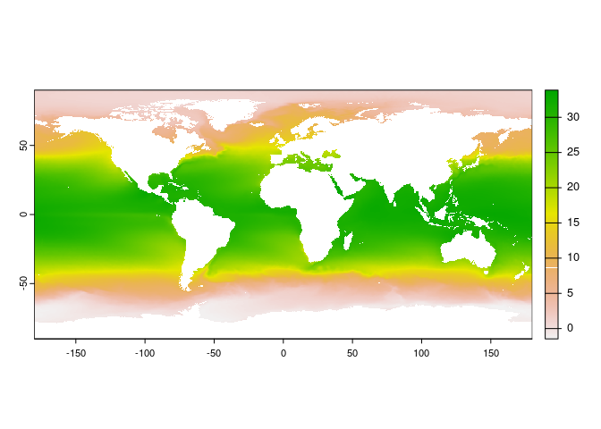
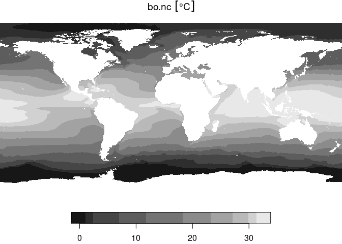
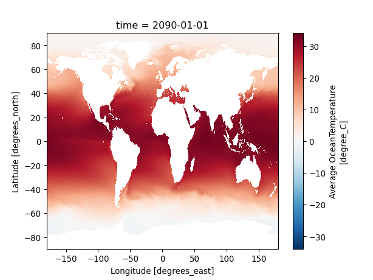

Bio-Oracle layers are natively developed in NetCDF format. This short tutorial shows how to turn into GeoTIFF in R and Python.
As an example, we will download the surface Ocean Temperature layer from Bio-Oracle, predicted for the decade of 2090 to 2100 using the Shared Socioeconomic Pathway scenario ssp585. Here below you can find a direct link to download.
Download Bio-Oracle Ocean Temperature Layer
Save the layer in a folder named data and name it as bo.nc.
There are several ways of turning a NetCDF file into GeoTIFF. Here we show how to do it with two of the most common packages for dealing with raster data.
# Install required package
# You can install them using: install.packages("terra")
library(terra)
#> terra 1.7.55
# Path to the Bio-Oracle layer file
nc_path <- "./data/bo.nc"
# Read layer
bo <- rast(nc_path)
# Inspect file
bo
#> class : SpatRaster
#> dimensions : 3600, 7200, 1 (nrow, ncol, nlyr)
#> resolution : 0.05, 0.05 (x, y)
#> extent : -180, 180, -90, 90 (xmin, xmax, ymin, ymax)
#> coord. ref. : lon/lat WGS 84
#> source : bo.nc
#> varname : thetao_mean (Average OceanTemperature)
#> name : thetao_mean
#> unit : degree_C
#> time : 2090-01-01 UTC
# Plot
plot(bo)

# Write as GeoTIFF
writeRaster(bo, "./data/bo_terra.tif")
# Install required package
# You can install them using: install.packages("stars")
library(stars)
#> Loading required package: abind
#> Loading required package: sf
#> Linking to GEOS 3.10.2, GDAL 3.4.1, PROJ 8.2.1; sf_use_s2() is TRUE
# Path to the Bio-Oracle layer file
nc_path <- "./data/bo.nc"
# Read layer
bo <- read_stars(nc_path)
# Inspect file
bo
#> stars object with 3 dimensions and 1 attribute
#> attribute(s), summary of first 1e+05 cells:
#> Min. 1st Qu. Median Mean 3rd Qu. Max.
#> bo.nc [°C] 0.8729433 0.9850401 1.13016 1.158159 1.32125 1.593663
#> dimension(s):
#> from to offset delta refsys x/y
#> x 1 7200 -180 0.05 NA [x]
#> y 1 3600 90 -0.05 NA [y]
#> time 1 1 2090-01-01 UTC NA POSIXct
# Plot
plot(bo)
#> downsample set to 7

# Write as GeoTIFF
write_stars(bo, "./data/bo_stars.tif")
# Install required packages
# You can install them using: pip install xarray rioxarray matplotlib
import xarray as xr
import rioxarray
import matplotlib.pyplot as plt
# Path to the Bio-Oracle layer file
nc_path = "./data/bo.nc"
# Read layer
bo = xr.open_dataset(nc_path)
#> /usr/lib/python3/dist-packages/scipy/__init__.py:146: UserWarning: A NumPy version >=1.17.3 and <1.25.0 is required for this version of SciPy (detected version 1.26.2
#> warnings.warn(f"A NumPy version >={np_minversion} and <{np_maxversion}"
# Inspect file
print(bo)
#> <xarray.Dataset>
#> Dimensions: (time: 1, latitude: 3600, longitude: 7200)
#> Coordinates:
#> * time (time) datetime64[ns] 2090-01-01
#> * latitude (latitude) float32 -89.97 -89.93 -89.88 ... 89.88 89.93 89.97
#> * longitude (longitude) float32 -180.0 -179.9 -179.9 ... 179.9 179.9 180.0
#> Data variables:
#> thetao_mean (time, latitude, longitude) float64 ...
#> Attributes: (12/39)
#> cdm_data_type: Grid
#> comment: Uses attributes recommended by...
#> Conventions: CF-1.5
#> creator_name: Bio-Oracle consortium: https:/...
#> creator_url: https://www.bio-oracle.org
#> Easternmost_Easting: 179.975
#> ... ...
#> standard_name_vocabulary: CF Standard Name Table v70
#> summary: Uses attributes recommended by...
#> time_coverage_end: 2090-01-01T00:00:00Z
#> time_coverage_start: 2090-01-01T00:00:00Z
#> title: Bio-Oracle OceanTemperature [d...
#> Westernmost_Easting: -179.975
# Extract the variable data that you want to convert to GeoTIFF
variable_data = bo["thetao_mean"]
# Plot
variable_data.plot()
plt.show()

# Write as GeoTIFF using rioxarray
variable_data.rio.to_raster("./data/bo_xarray.tif")